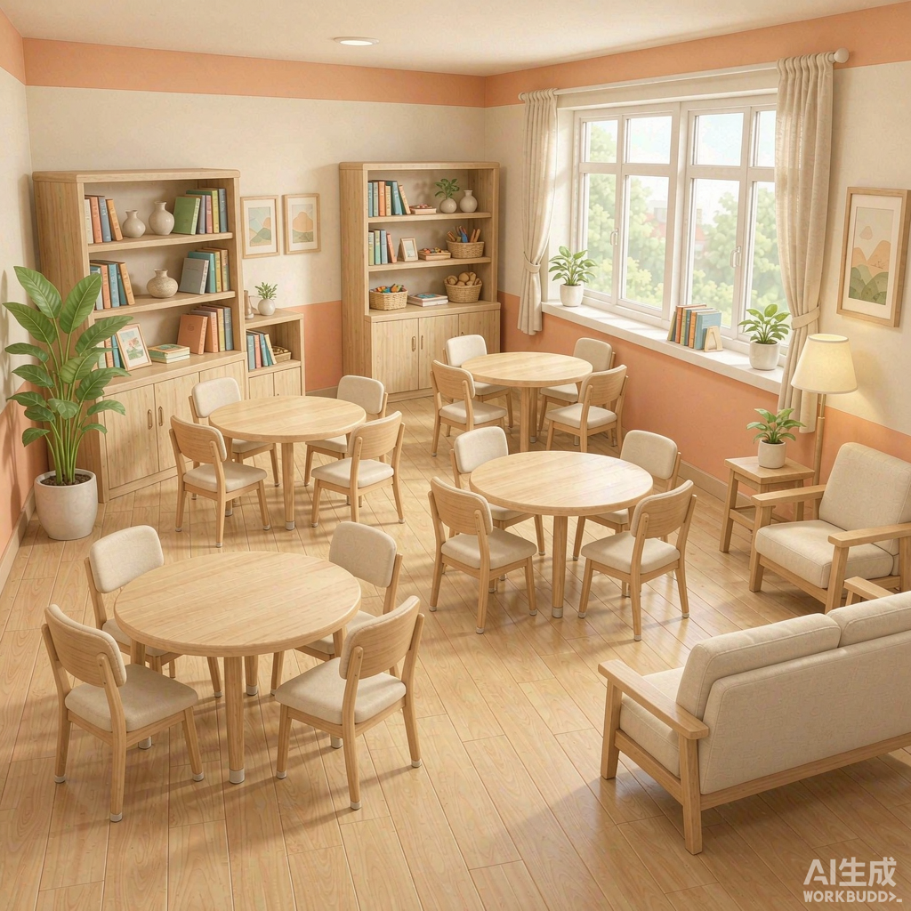

实验室测试房间
真实雷达位置与疑似跌倒预警 · 事件需人工核查
当前跟踪目标—
待查看报警—
帧号—
数据年龄—
目标实时视图

目标信息
等待数据
心率、呼吸率、站立/坐姿分类尚未接入。高度是雷达目标估计，不是头部高度。
跌倒报警与排除记录 · 人工核查
读取中
显示与外观设置 · 无需修改代码
外观保存在当前浏览器。坐标图范围只改变显示比例；家具素材没有测量标定，不能据图判断实际家具坐标。正式布局需要现场校准。
检测区域设置 · 后台保存
区域使用现有后台的 X/Y 坐标。被排除位置内的人也不会参与跌倒判断，请勿覆盖可能坐人的区域。点云显示包含原始环境反射，不代表每个点都是人。